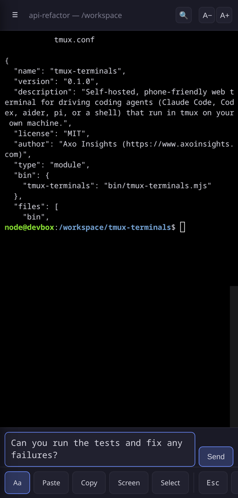
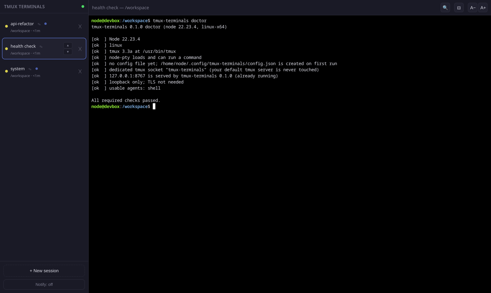

Open source · MIT
Your terminal sessions, on your phone.
tmux-terminals is a web terminal you host yourself. Start a coding agent on your laptop or server, walk away, and keep steering it from your phone or any browser.
Sessions live in tmux. If the Wi-Fi drops or you close the tab, the agent keeps running. Open the page again and pick up where you left off.
Made for people who run coding agents like Claude Code, Codex, aider or pi on their own machine.
npx tmux-terminals
Needs Node 20+ and tmux. Linux and macOS (Windows via WSL2).

On the desktop

Built for thumbs
A real terminal is hard to use on a small screen. These parts make it easier.
Compose box
Type in a normal text box, so autocorrect and voice typing work. Enter sends. Shift+Enter adds a new line.
Key buttons
Esc, Tab, arrows, Ctrl-C, Ctrl-D, Ctrl-U, Ctrl-R and Enter are one tap away.
Copy and paste
Paste, Copy and Screen buttons handle the clipboard. Screen copies what you see. Select lets you drag-select.
QR code to open on your phone
Run
tmux-terminals token --qrand scan it with your camera. The page sets a cookie and cleans the address bar.Token login
A random token is required on every route, even from localhost.
Sessions that stay alive
Each session is a tmux session. Restart the server and the agents are re-attached.
Drag to reorder
Rename, kill and drag sessions in the sidebar. The order is shared by all your devices.
Doctor and smoke checks
tmux-terminals doctorfinds setup problems and prints the fix.smoketests a running server end to end.Run it as a service
tmux-terminals install-servicewrites a systemd user unit on Linux or a launchd agent on macOS. It prints the commands to enable it and never enables anything silently.
How it works
Run it
Run
npx tmux-terminalson your machine. The first run creates a config with a random token and prints a URL and a QR code.Start an agent
Open the URL, press New session, then pick an agent and a folder.
Open it on your phone
Scan the QR code, or add the page to your home screen. Close the tab whenever you like. The session keeps running in tmux.
Security note
Anyone who has your token gets a shell as your user. Treat it like a password.
By default the server only listens on 127.0.0.1. It also checks the WebSocket origin and uses its own tmux socket, so your normal tmux server is never touched.
To reach it from your phone, a private network is the best choice. The README recommends Tailscale (tailscale serve) for real HTTPS with nothing exposed to the internet. On your home Wi-Fi you can use --host 0.0.0.0, which turns on a self-signed certificate.
Try it in 30 seconds
npx tmux-terminals